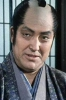

Also known as:座頭市あばれ凧 (original title)
Country:Japan, 82 minutes
Spoken languages:Japanese
Genres:Action, Drama
Director(s):Kazuo Ikehiro
Writer(s):Minoru Inuzuka, Shozaburo Asai
Video Codec:Unknown
Number: 2813


Certification:
Storyline:
Blind masseur Zatoichi is nursed back to health by a young woman after he is shot by a gang member. Zatoichi, who had come to the village to repay a debt, now feels further indebted. He commits himself to use his amazing sword skills to help the young woman's father, whose river-crossing service is under attack by the same gang responsible for Zatoichi's wounds.
Cast: 


Medium: Bluray,
Comments: Part of: Zatoichi - The Blind Swordsman collection
Loaned: No
Aspect ratio: Unknown